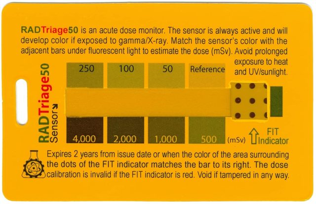
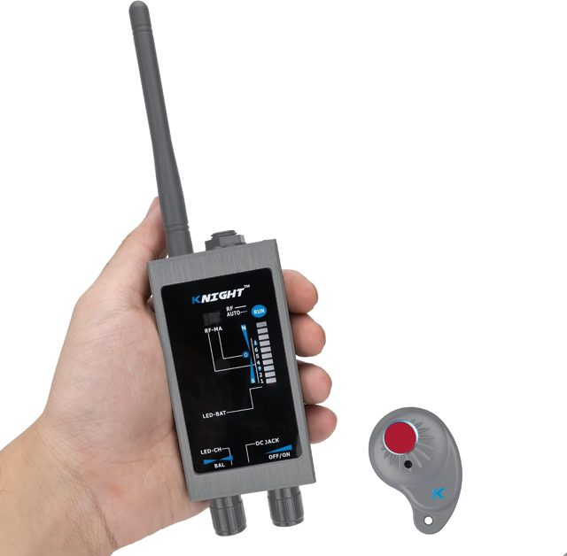
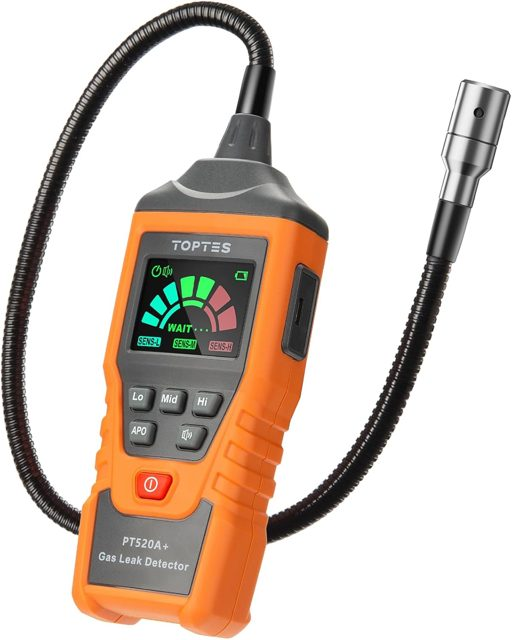

Shared field kit · planned end-state · not yet built
One TX Pelican, one RX case, two electrically separate antennas
Cargo plan for taking Experiment A (1296 MHz sleeve-stub + pancake) and Experiment B (433.59 MHz balls + rods) into the field. Plastic cube = hydrostatic shell. RadioScreen = Faraday. The antennas share a box, not an RF feed. This page is not a claim the hull has been bought, ballasted, or dunked.
TX: one cubical watertight case
One cube. Cutout foam holds the 1296 sleeve-stub sled and the 433 TX sphere in separate wells. The whole inner pack is wrapped in RadioScreen. Plastic Pelican = hydrostatic shell; mesh = Faraday. Flat sides of the cube are for aiming the stub axis; do not rely on a round case for that.
- Antennas are cargo in one Faraday wrap — they keep their own feeds. Do not tee 1296 and 433 onto one coax.
- 23 cm BPF stays in the 1296 TX chain inside the wrap (setup.html#bpf).
- Experiment B ball: coax into the sphere, outer as shield, no balun (monstein.html#parts).
RX: second case, usually lid open
The receiver case is not the submerged article. Leave the lid open. Drape a RadioScreen mesh tent over the instruments so Dan can read two TinySA screens (one at 1296, one at 433) through the see-through mesh. Same “no USB out on a sealed run” honesty as the bench tents: if a cable is out, it is a leaky config.
Sequential is the default
Dan has three TinySA Ultra units now. Sequential (one experiment at a time) is the default.
| Mode | TinySA count | Notes |
|---|---|---|
| Sequential TX+RX | 2 | One pair. Switch the antennas / wells between A and B. Default. |
| Sequential with a spare | 3 (what he has) | Two dedicated to the live experiment; third as spare or a switched TX. |
| Simultaneous dedicated | 4 | TX1296, TX433, RX1296, RX433. Only if they don’t interfere and a 4th Ultra is bought. With 3, one TX is switched or shared. |
Simultaneous is optional later, not the first field plan.
Harmonic warning (why sequential first)
1296 / 3 = 432 MHz, only 1.59 MHz from 433.59. 433.59 × 3 = 1300.77 MHz vs 1296. Square-wave / mixer-region TinySA drive is already harmonic-rich. If you ever run both transmitters at once you need:
- 23 cm BPF on the 1296 TX (already in the A chain)
- a 70 cm BPF on the 433 TX
- separate foam wells
- both antennas still inside the mesh
Do sequential first. Do not treat a simultaneous dunk as the first article.
Ballast — the empty cube floats
Pelican 0340 buoyancy is 220 lb. The empty cube floats. Do not drill the hull (kills IP67, seal, and warranty). Pelican cubes have no D-rings.
Ballast path: NRS 1″ HD cam straps through the four fold-down handles, then lead or steel shot bags on that webbing. No hull holes. Do not use VHB pad-eyes as the primary seawater path.
Depth honesty
IP67 = 1 m / 30 min, not continuous seawater. First tests: pool / shallow Florida. Later seawater is a separate, logged step — different risk, different log row, not implied by buying a cube.
Tomilin 2021 vs Experiments A & B — what we still omit for a later at-sea article
Scope: land-first Exp A (1296 MHz ¾″ sphere / mesh) and Exp B (433.59 MHz balls + polarizer rods). Dan’s Nanuk (and Pelican) cases are for land outdoor use — they are not Tomilin-class continuous-seawater enclosures. A future marine replication is a separate logged article, not implied by buying land cases or the planned plastic cube below.
| Tomilin 2021 | Hub Exp A / B today | Still needed for Tomilin-like sea test |
|---|---|---|
| 27.4 MHz HF radio (~1.17 W) | A: 1296 MHz TinySA class; B: 433.59 MHz | Licensed HF path (or explicit scale study) — not a drop-in of A/B RF |
| Tesla spiral Ø320 mm + rod + Cu sphere Ø60 mm; dielectric jacket vs seawater | SMA bulkhead into hollow Al ball (A ¾″ / B 2.50″); no Tesla coil | Spiral + rod feed + full dielectric cladding; B’s 2.50″ OD is closest to 60 mm |
| Sealed metal box (radio + batteries) rigidly on antenna; RX → voice recorder in box | Nanuk/Pelican land cases; mesh tents; TinySA on bench | Pressure-rated seawater hulls, wet-mate glands, submerged recorder/telemetry — not Nanuk land cases |
| Nylon ropes; buoy 6 m / tow 4 m; GPS 20–470 m; σ, T logged | Land rails / precision ranging notes (A, B) | GPS + depth sensors; nylon buoy/tow; seawater conductivity/temp log |
| No polarizer-rod cube underwater | B rods = land MW polarizer only | Keep rods out of the seawater Tesla–sphere article unless a separate B-on-boat control |
Library card (figures + citations): library.html#tomilin-2021. PDF: papers/…Marine-Radio-Channel.pdf. Contested physics — educational planning only.
A metal case is optional later (Faraday + hull in one) but corrosion, no see-through, and true subsea boxes (Slayson IP68 aluminum, Blue Robotics watertight-box class) are small and expensive. First buy: plastic cube + internal mesh. Those metal/subsea boxes are “too small / later,” not the first SKU.
Case SKUs (vendor pages ~Sep 2026)
Prices are what the vendor pages showed around Sep 2026. Confirm before you buy. Not an endorsement beyond “this is the SKU we checked.”
| Case | Role | Notes |
|---|---|---|
| Pelican 0340 Protector Cube SKU 0340-000-110 pelican.com/…/protector/0340 |
FIRST BUY TX hull (and a second cube if you want a matching lid-open RX shell) | ~$479.95 foam / $424.95 empty (~Sep 2026). Interior 18×18×18 in (some dealers: wheel wells cut usable height to ~16.5 in). Exterior 20.5×20.5×19.25 in. IP67. PP. Pick N Pluck. Buoyancy 220 lb. No D-rings. Drilling voids seal + warranty. |
| Pelican 0350 Cube pelican.com/…/protector/0350 |
Larger cube if 0340 wells feel tight | ~$489.95 foam / $454.95 empty. Interior 20×20×20 in. IP67. PP. Pick N Pluck. Same plastic-cube + internal-mesh idea. |
| Pelican 0370 Cube pelican.com/…/protector/0370 |
Largest cube in this family | ~$589.95 foam / $539.95 empty. Interior 24×24×24 in. IP67. PP. Pick N Pluck. Not required if 0340 fits. |
| Pelican 1200 with pick-n-pluck foam (link stays on setup.html#shop) |
Small TinySA / coil travel case | Not the submersible TX hull. Do not rebrand the 1200 as the cube. |
| Slayson IP68 aluminum / Blue Robotics watertight box class | Too small / later | True subsea boxes. Corrosion, no see-through, expensive, small. Not the first SKU. |
Not first buy (one-liners): Nanuk 960 ~$375 rectangle; SKB 3i-2217-12; B&W Type 5500 cheaper near-cube; Zarges K470 aluminum is IP54 on the US 40564 SKU / IP67 EU 380366 — metal cages the RF unless antennas are outside on glands; Blue Robotics WTE is a cylinder; Hammond 1554 / Hoffman Al too small or not 6P.
Summary on the master page: index.html#kit.
Tekbox TBPS01 · H20 / H10 / H5 / E5 near-field probes (on hand · Sep 2026)
Dan’s set (often labeled “TEXBOX” on the box) is the Tekbox TBPS01 EMC near-field probe kit: magnetic-field loops H20 (20 mm), H10 (10 mm), H5 (5 mm), and electric tip E5 (5 mm), SMB connectors, ~75 cm SMB→SMA cable, coupling plots, and a certificate / measurement plots (keep with the wooden case). Official manual: TBPS01 / TBWA2 manual (PDF) · Paper certificate/plots stay with the wooden case (scan kept locally on the assistant machine). · product: tekbox.com TBPS01. Frequency class: coupling characterized roughly 30 kHz–6 GHz (see probe plots; H20 has noted resonances near ~1.3 GHz and ~4 GHz).
| Probe | Type | Tip / loop | Use on this hub |
|---|---|---|---|
| H20 | H-field | 20 mm loop | First B-null survey near Exp A/B spheres (most sensitive of the three H tips) |
| H10 | H-field | 10 mm loop | Narrower localization if H20 sees something |
| H5 | H-field | 5 mm loop | Finest localization / PCB-scale; also useful near SMA bulkheads |
| E5 | E-field | 5 mm tip | Corroborate electric pickup near the sphere; not a substitute for the H-null |
B-null protocol (anytime measuring for SLW / SW)
- Run the sphere listen (TinySA Ultra on Exp A and/or B SMA) and mark the candidate frequency / time window.
- Without changing the RF scene, connect H20 (then H10/H5 if needed) via SMB→SMA to the same TinySA (or a second Ultra). Optional TBWA2 preamp if you have one — log gain.
- Hold the H-loop near the receiving sphere (and scan orientations: loop plane parallel / perpendicular to expected B). Keep hands off the shield; Tekbox loops are designed to reject common-mode from the hand.
- Interpret (educational):
- Sphere excess + H-probe at noise → consistent with non-TEM / weak-B hypothesis (SLW/SW language still needs full null suite).
- Sphere excess + clear H-probe line → treat as TEM or mixed; do not claim pure SLW/SW.
- Neither → no detection claim.
- Log probe model, orientation, distance to sphere, TinySA RBW/LNA, and whether polarizing rods were present (Exp B). For Exodus / Faraday-cage listens, see Experiment E listen checklist.
Store the paper certificate/plots with the case. Probes are EMC pre-compliance tools — absolute µT conversion needs the manufacturer coupling curves, not a casual dBm reading.
NanoRFE VNA6000-A — shared VNA (on hand)
Dan bought a NanoRFE VNA6000-A (50 kHz–6 GHz two-port VNA, ~95 dB dynamic range class, TDR ~6 mm resolution, ~300 g, NanoVNA-QT / NanoVNA-Saver). Product: nanorfe.com/vna6000.html. Complements the TinySA Ultras (SA / generator) — use the VNA for S-parameters and TDR, not as the primary spectrum monitor.
| Experiment | Suggested VNA uses |
|---|---|
| A · 1296 MHz ¾″ sphere / mesh | S11 of KB-1820 + 901-9875 feed; S21 of 23 cm BPF; TDR of RG-316 / pigtails; optional archived sleeve-stub S11. Confirm match before sealed mesh runs. Any SLW/SW claim: Tekbox H-probe B-null near the RX sphere (#tekbox). |
| B · 433.59 MHz balls + rods | S11 of each KB-2016 ball feed; TDR / electrical length of jumpers; sanity-check that the polarizer cube is not a 2-port DUT — rods stay a land T(φ) article. Log S11 vs frequency around 433.59 MHz. SLW/SW language: H-probe B-null near the RX sphere even when rods are not used (#tekbox). |
| C · atomic 1S–2S RF arm | S11 of any stub / sphere / bifilar RF launcher reused from A practice; cable/filter check before optical runs. Not a substitute for PMT dark counts. |
| D · hypersonic plasma shear | Characterize any RF probe / antenna / coupling path on the D page before claiming SLW/SW pickup; TDR of long cables in the field kit. |
| E · Exodus capacitor SLW/SW | S11 / impedance of detector SMA paths and any TX feed; verify Pelican A/B detector cables. Capacitor DUT itself is not a classic 50 Ω antenna — log what plane you calibrated to. Pair every candidate listen with Tekbox H-probe B-null (#tekbox). |
| F · Hydrogen / pure SW | Same as C/E for any RF or bifilar / ball transmitter arm; keep VNA off the optical/VUV path. Use before Josephson exploratory RF bias lines if those appear. |
| Shared kit / later seawater | TDR glands and pigtails; S11 of marine antennas before dunk (land dry). Not a submerged instrument unless in its own rated housing. |
TinySA remains the on-air SA / milliwatt generator. VNA6000-A is the characterization tool. Specs: NanoRFE VNA6000.
Lady Lake garage instruments (on hand / Amazon-shared · Sep 2026)
Inventory Dan emailed to himself from Amazon (and related kit). Photos for Steve. Nuclear meters labeled honestly for Channel E vs RF benches. Detail: c-nuclei.html#kit.
| Photo | Instrument | Qty / status | Role on this hub | Link |
|---|---|---|---|---|
| — | Tekbox TBPS01 (H20, H10, H5, E5) | 1 kit on hand (arrived 2026-09-19) · certificate/plots in case | Near-field H/E probes for B-null beside Exp A/B sphere listens — see #tekbox. | tekbox.com |
| — | NanoRFE VNA6000-A (NanoVNA V3) | 1 on hand (bought 2026-09-17) | 2-port VNA · 50 kHz–6 GHz · ~95 dB DR · TDR ~6 mm. S11/S21 for antennas, BPF, cables — see #vna6000. | nanorfe.com/vna6000 |
 |
SeeSii TinySA Ultra+ ZS406 | 3 on hand | Primary RF for Experiments A/B — SA / generator. Sequential default. | Amazon |
 |
FNIRSI-class Geiger dosimeter | 1 | Bag check only. Weak for Channel E |δλ/λ|. | Amazon |
 |
TriField EMF Meter | 1 | EMF / RF ambient checks — not nuclear. | Amazon |
 |
Radiacode 103 (recommended) | Buy candidate | Channel E spectrometer — see buy list. | radiacode.com |
 |
Exempt EC disks (Co-57 / Cd-109 class) | Buy after Lee | Sealed check sources for ROI counting. | Images Scientific |
 |
Rad Triage 50 | 1 | Personal exposure — not Channel E. | Amazon |
 |
KNIGHT Hidden Devices finder | 1 | Inventory only — not Channel E. | Amazon |
 |
TopTes PT520A+ gas detector | 1 | Garage safety — not nuclear/SLW. | Amazon |